Recommendations, in brief: task ISR on the monthly escalation watch-list. Keep Gulf NEO plans current while US–Iran is AMBER. Treat the Af–Pak interstate dyad as a standing I&W indicator for the LoC. Build indigenous OSINT coverage of West Asia: Indian outlets appear in 17% of Af–Pak events and almost none elsewhere. See §9.
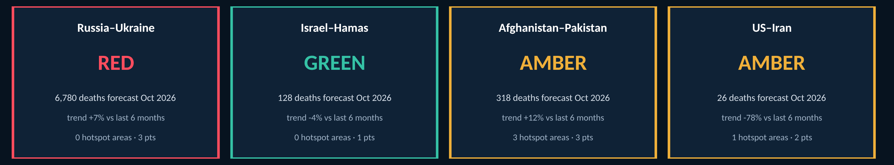
| Conflict | Rating | Oct 2026 forecast | 80% low | 80% high | Trend vs 6 mo (%) | Hotspot areas | Top escalation areas (probability) | Points |
|---|---|---|---|---|---|---|---|---|
| Russia–Ukraine | RED | 6,780 | 3,316 | 16,708 | +7 | 0 | Chernihiv (15%); Dnipropetrovsk (14%); Sumy (14%) | 3 |
| Israel–Hamas | GREEN | 128 | 62 | 317 | -4 | 0 | Gaza Strip (14%); West Bank (11%); Haifa district (1%) | 1 |
| Afghanistan–Pakistan | AMBER | 318 | 155 | 786 | +12 | 3 | Kandahar (23%); Balochistan (21%); Kunar (21%) | 3 |
| US–Iran | AMBER | 26 | 12 | 66 | -78 | 1 | Hormozgan (16%); Khuzestan (12%); Kermanshah (9%) | 2 |
The brief asks teams to explore four conflicts, frame their own questions, and show verifiable, reproducible findings with stated assumptions. For an audience of military officers we chose an operational framing:
When and where will conflict deaths rise next, and what does that mean for the Indian Armed Forces and for humanitarian planning?
| # | Question | Method | Section |
|---|---|---|---|
| Q1 | How intense is each conflict, and how is it changing? | Monthly panels, tempo, lethality, seasonality | 5.1 |
| Q2 | How are the wars fought: attrition, violence type, front geography, spread? | Dyad/side analysis, geolocated-event shares, theatre spread | 5.2 |
| Q3 | Can we forecast monthly deaths better than simple rules, on unseen 2026 data? | 7 models, walk-forward back-test, 2026 holdout, conformal intervals | 7 |
| Q4 | Can we warn which areas will escalate next month? | Sub-national classifier, watch-list precision | 8 |
| Q5 | What does it mean for India? | Exposure analysis + clearly labelled domain reasoning | 6 |
Throughout, [Data] marks results computed from the competition files and [Domain] marks expert reasoning that the files cannot prove.
Sources (official package only). 61,055 UCDP event records (GED 26.1 for 2014–2025; provisional Candidate 26.01.26.09 for Jan–Sep 2026), 85,406 source references, UNHCR bilateral stocks (6,273 rows) and demographics (19,830), IDMC/UNRWA reference stocks (112) and World Bank context (1,764). The top-level files outside the official folder belong to another package and were not used.
36 documented checks, of which 23 found something to handle. No row is silently dropped: every fix is logged, and raw values are kept beside corrected ones.
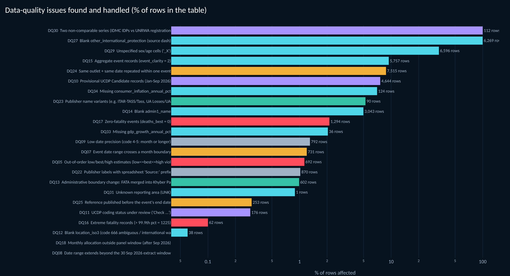
Key decisions:
min/max of the three). We widen the band rather than move best, because best reconciles exactly with the
four fatality components (validated for every row).INTL (waters/airspace) or XXX (ambiguous code 666). Blank admin1
becomes an explicit "country-level" bucket, so those deaths are not lost.A finding from cleaning: the fog of war is in the data. The share of Russia–Ukraine deaths with no sub-national location rose from 30% (2022) to 92% (2026), because most recent deaths come from country-level memorial and aggregate counts. We therefore measure front geography with located, discrete events, and we state this limit wherever sub-national results touch Ukraine.
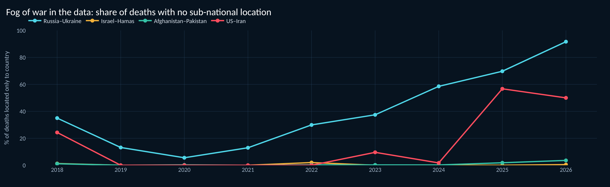
Two monthly panels: 4 conflicts × 153 months and 222 sub-national area series × 153 months (zero-filled). Every feature is known at the end of the forecast-origin month. Annual context is lagged one year.
| Family | Features | Military / analytic idea |
|---|---|---|
| Intensity memory | lags 0–12, rolling means 3/6/12, EWM, 12-month peak | War has inertia |
| Momentum | 3-vs-12-month momentum, acceleration, dormancy streak | Escalation = short-term above long-term norm |
| Tempo | events/month, references/month, outlets | Engagements vs lethality |
| Fog of war | (high − low)/best, aggregate share, low date precision | Degraded reporting picture |
| Character | civilian, state-based, one-sided and focal-dyad shares | Battlefield vs punitive violence |
| Geography | active areas, Herfindahl concentration, share outside core theatre | Front widening, horizontal escalation |
| Seasonality | target-month sine/cosine, same month last year | Campaign seasons |
| Context (t−1 y) | IDPs, refugees, displacement growth, GDP growth, inflation | Structural stress |
| Hierarchy | conflict-level tempo and momentum, area's share of its conflict | Areas inherit their war's tempo |
The ablation in §7.2 shows that a compact subset generalises best at conflict level. With four series, 40 features over-fit. The richer set is used where data are plentiful (222 sub-national series).
| Russia–Ukraine | Israel–Hamas | Afghanistan–Pakistan | US–Iran | |
|---|---|---|---|---|
| Recorded deaths 2014–Sep 2026 (best) | 447,452 | 67,933 | 31,082 | 7,929 |
| UCDP low – high | 270,529 – 782,980 | 64,292 – 71,893 | 28,784 – 39,746 | 6,878 – 8,742 |
| Peak month | Mar 2022 (27,245) | Oct 2023 (11,211) | Feb 2017 (762) | Mar 2026 (2,825) |
| Deaths Jan–Sep 2026 | 64,453 | 1,191 | 2,767 | 3,965 |
| Civilian share | 7% | 49% | 20% | 36% |
| Countries with deaths | 4 | 9 | 2 | 15 |
Each conflict has a different threat signature: RU–UA is sustained attrition (4–11k deaths a month since 2023), US–Iran is spikes (proxy and coalition strikes, then direct war in Feb–Mar 2026), Af–Pak is creeping (rising since 2021), and Israel–Hamas is de-escalating (about 130 a month in 2026 after a 2,474-death month in Jul 2025). So what: one warning rule cannot fit all four. We forecast level, trend and spread separately.
Front geography – widening, not moving [Data]. Donetsk's share of geolocated events fell from 55% (2022) to 30% (2026). Zaporizhzhia (14%), Dnipropetrovsk (7%), Sumy (6%) and Russia's Belgorod (5%) grew. Recorded deaths inside Russia peaked at 10,358 in 2024 (Kursk). So what [Domain]: a wide, static front rewards long-range precision fires, counter-drone and EW, and logistics depth. Warning should track the number of active sectors, which our models do.

Recorded attrition by side [Data, with caveat]. In the RU–UA focal dyad, UCDP records 41,929 Russian vs 21,844 Ukrainian fatalities in 2022 (ratio 1.9:1), widening to 5.5:1 in 2025 and 10.5:1 in 2026. In the 2026 US–Iran war, Iran's recorded losses were 1,274 against 11 for the Israel–US coalition. Caveat: these are recorded figures. Ukrainian OSINT and memorial databases document Russian losses more fully than the reverse, so the ratio is an upper bound of reporting, not a verified exchange ratio. So what [Domain]: stand-off precision strike, layered air defence and drone-enabled ISR produce extreme asymmetry. These lessons apply directly to Indian force design on both fronts.

Afghanistan–Pakistan: a second front opens [Data]. Violence has concentrated in Khyber Pakhtunkhwa (TTP) and Balochistan, and has risen every year since 2021. Since Oct 2025 the Afghan and Pakistani states clash directly (131 deaths in Oct 2025; 172, 411 and 68 in Feb–Apr 2026). So what [Domain]: the Pakistan Army is committed in the west. That can lower its eastern capacity, or raise the incentive for diversionary LoC activity. India should watch the western front more closely, not less.


Horizontal escalation [Data]. The US–Iran case spread from 4 countries (2025) to 14 (2026), including five Gulf states and Sri Lankan waters. Israel–Hamas reached Qatar in Sep 2025.
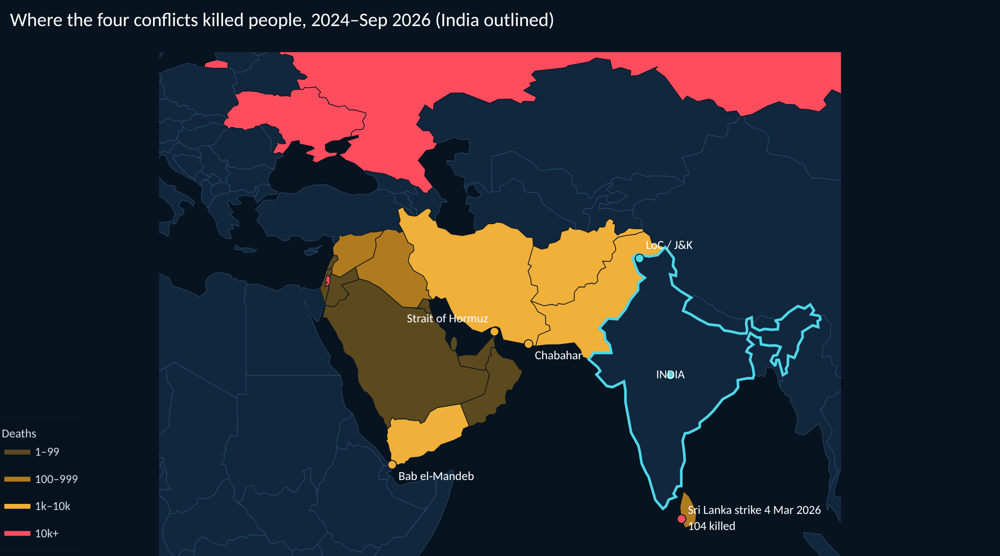
Campaign seasons [Data]. RU–UA deaths run +35% (May) and +25% (Jul) against trend, and -27% (Dec) and -34% (Jan), matching the summer campaigning season and the winter/rasputitsa lull. Af–Pak peaks in Sep–Oct. Seasonality enters the models.
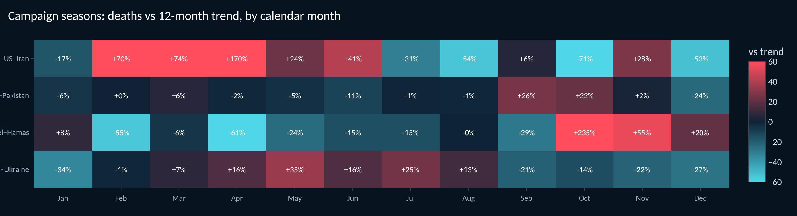
We regress monthly source references on events and deaths (log, with conflict fixed effects). The residual, standardised, is the Attention Gap Index (AGI): above 0 means over-reported, below 0 means "forgotten" violence.

So what: trigger HADR planning on onset and spread (our escalation flags), and stock paediatric and maternal supplies.
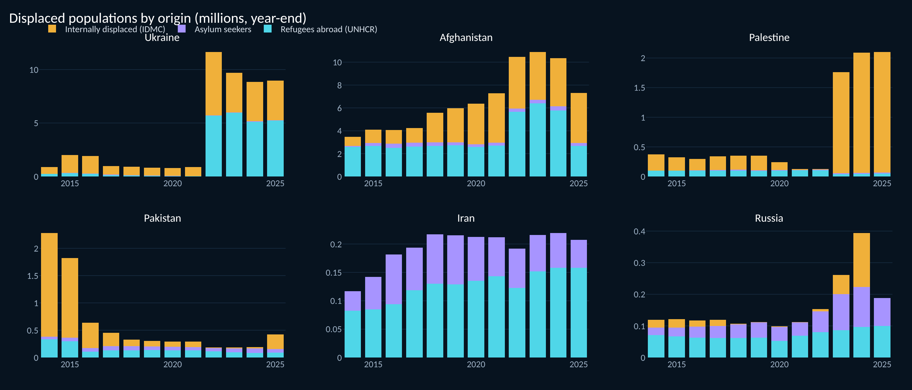
| Theatre | What the data show [Data] | What it means for India [Domain] |
|---|---|---|
| Afghanistan–Pakistan | KP deaths up every year since 2021; Afghan–Pakistan state clashes since Oct 2025; deaths in Pakistan areas adjoining India/LoC rose from 2 (2022) to 52 (2025) | Pakistan Army committed in the west, so risk of diversionary LoC activity, infiltration and TTP/IS-K spill-over |
| US–Iran / Gulf | 14 countries hit in 2026, including 5 Gulf states (25 events, 37 deaths); 299 deaths on Iran's Hormuz/Chabahar coast; 945 deaths in Yemen in 2025 | About 9M Indians in the Gulf need NEO contingency (cf. Op Ganga, Kaveri, Ajay); a large share of crude and LPG transits Hormuz; Chabahar and INSTC lie in the strike zone; Red Sea shipping at risk |
| Indian Ocean | 104 killed in one strike off Sri Lanka's west coast, 4 Mar 2026 | The war entered India's maritime neighbourhood. IFC-IOR and Navy need a belligerent-movement picture |
| Russia–Ukraine | 4–11k deaths a month; front widening; extreme recorded attrition asymmetry | Spares and deliveries for legacy Russian platforms at risk; drone, counter-drone and EW lessons |
| Israel–Hamas | De-escalated to about 130/month in 2026 | Key supplier of UAVs, missiles and sensors at war; buffer stocks |
| Refugees in India | Afghans 16,247 (2021) → 8,377 (2025); Russian asylum seekers 5 (2015) → 329 (2025) | Small numbers; the rising Russian flow is consistent with draft-evasion migration, so monitor |
| Macro | India's inflation was 6.7% in 2022 (World Bank) | Coincides with the energy shock; attribution not claimed |
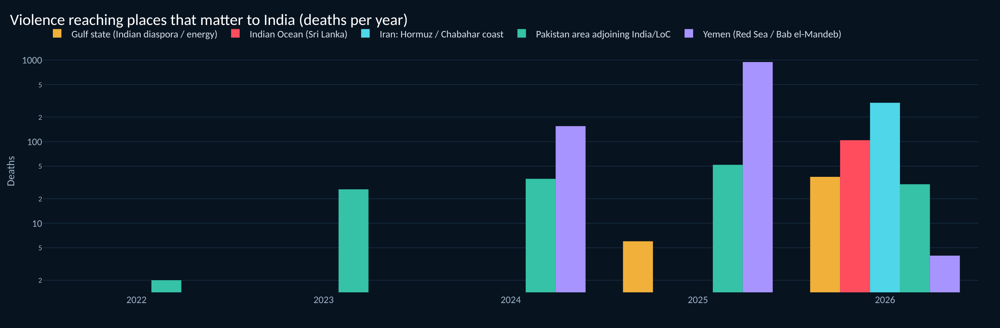
Models are fitted once on data up to December Y − 1, frozen, and scored on Jan–Sep of year Y in two ways:
Back-test folds 2022–2025 drive every design choice: ablation, ensemble membership and interval calibration. 2026 is the withheld test set, scored once. Metrics: MAE, RMSE, MAPE (actual > 0), sMAPE, MASE and RMSLE. RMSLE is the selection metric because the four series differ by three orders of magnitude.
| Model | Role |
|---|---|
| Naive, seasonal naive, 3-month moving average | Benchmarks |
| ETS (damped Holt, log) | Classical smoother for level shifts |
| SARIMA (AIC-selected per series, log) | Autocorrelation and seasonality |
| LightGBM-Δ (global across the 4 conflicts) | Learns the change in log deaths from 18 features |
| LightGBM bottom-up (Tweedie; 222 area series summed) | Hierarchical, answers where |
| Ensemble = Moving average + ETS + LightGBM-Δ global | Log-space mean; members chosen on back-test |
| LightGBM variant | RMSLE Track A (1-step) | RMSLE Track B (1-9 step) |
|---|---|---|
| A. Level target, L2, full features (default ML) | 1.232 | 1.197 |
| B. Δ target, L2, full features | 0.993 | 1.260 |
| C. Δ target, L2, full features, regularised | 0.955 | 1.283 |
| D. Δ target, Huber, compact features | 0.896 | 1.143 |
| E. Δ target, L1, compact features (selected) | 0.902 | 1.128 |
| F. Tweedie on raw counts, full features | 1.331 | 1.263 |
A plain LightGBM on the log level is the worst ML option. Regression trees cannot predict beyond the target range seen in training, so a model fitted before 2022 can never forecast the invasion. Predicting the change in log deaths removes that ceiling. A compact feature set with a robust L1 loss generalises best.
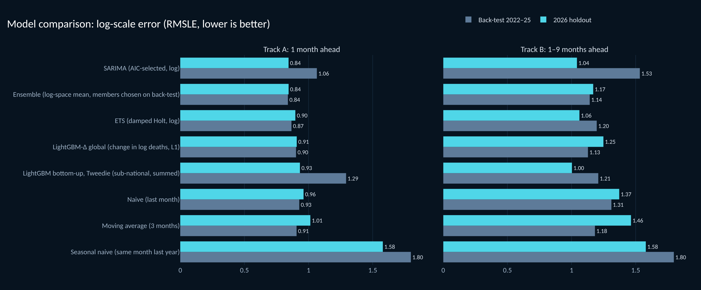
RMSLE (lower is better)
| model | A · Back-test 2022–25 | A · 2026 holdout | B · Back-test 2022–25 | B · 2026 holdout |
|---|---|---|---|---|
| Ensemble (log-space mean, members chosen on back-test) | 0.839 | 0.845 | 1.142 | 1.169 |
| ETS (damped Holt, log) | 0.867 | 0.897 | 1.196 | 1.062 |
| LightGBM-Δ global (change in log deaths, L1) | 0.902 | 0.908 | 1.128 | 1.249 |
| Moving average (3 months) | 0.907 | 1.014 | 1.182 | 1.464 |
| Naive (last month) | 0.928 | 0.961 | 1.311 | 1.372 |
| SARIMA (AIC-selected, log) | 1.065 | 0.844 | 1.532 | 1.042 |
| LightGBM bottom-up, Tweedie (sub-national, summed) | 1.293 | 0.933 | 1.208 | 1.003 |
| Seasonal naive (same month last year) | 1.798 | 1.579 | 1.798 | 1.579 |
MAE, 2026 holdout, 1 month ahead (deaths per month)
| model | Russia–Ukraine | Israel–Hamas | Afghanistan–Pakistan | US–Iran |
|---|---|---|---|---|
| Ensemble (log-space mean, members chosen on back-test) | 563 | 17 | 123 | 445 |
| SARIMA (AIC-selected, log) | 686 | 35 | 98 | 434 |
| Naive (last month) | 805 | 39 | 128 | 643 |
| ETS (damped Holt, log) | 805 | 35 | 113 | 438 |
| Moving average (3 months) | 1,166 | 29 | 145 | 684 |
| LightGBM-Δ global (change in log deaths, L1) | 1,439 | 31 | 115 | 433 |
| Seasonal naive (same month last year) | 1,938 | 1,399 | 144 | 494 |
| LightGBM bottom-up, Tweedie (sub-national, summed) | 2,352 | 101 | 148 | 420 |
The ensemble reduces 1-month-ahead MAE against the naive rule by 30% (RU–UA), 55% (Israel–Hamas), 31% (US–Iran) and 4% (Af–Pak); pooled, 29%. MAPE for RU–UA is 9%. On Track B (9 months blind), SARIMA and the bottom-up LightGBM edged the ensemble in 2026, though not in the back-test. We report this rather than re-select on the test set.
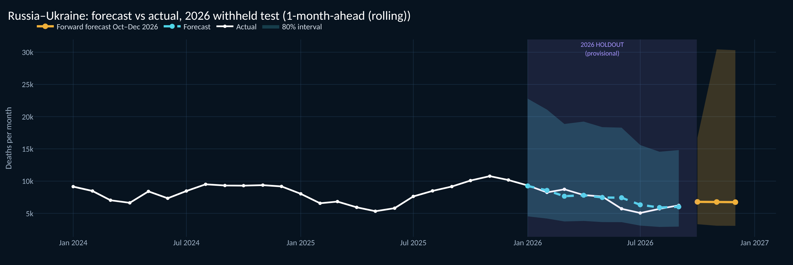
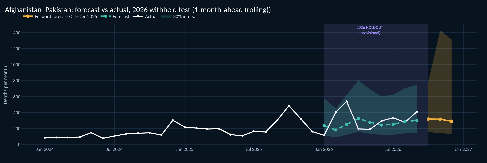
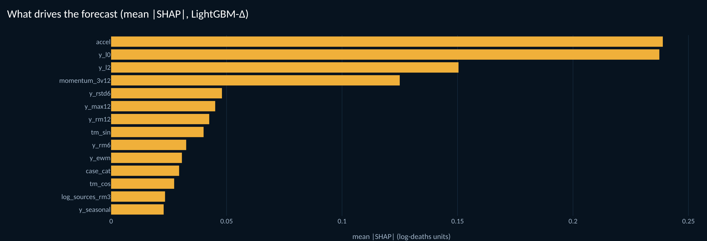
Forward forecast (all data, refitted):
| Conflict | Month | Forecast deaths | 80% low | 80% high |
|---|---|---|---|---|
| Afghanistan–Pakistan | Oct 2026 | 318 | 155 | 786 |
| Afghanistan–Pakistan | Nov 2026 | 316 | 143 | 1,428 |
| Afghanistan–Pakistan | Dec 2026 | 291 | 132 | 1,313 |
| Israel–Hamas | Oct 2026 | 128 | 62 | 317 |
| Israel–Hamas | Nov 2026 | 129 | 58 | 583 |
| Israel–Hamas | Dec 2026 | 123 | 55 | 557 |
| Russia–Ukraine | Oct 2026 | 6,780 | 3,316 | 16,708 |
| Russia–Ukraine | Nov 2026 | 6,765 | 3,071 | 30,447 |
| Russia–Ukraine | Dec 2026 | 6,735 | 3,058 | 30,316 |
| US–Iran | Oct 2026 | 26 | 12 | 66 |
| US–Iran | Nov 2026 | 26 | 11 | 122 |
| US–Iran | Dec 2026 | 24 | 11 | 114 |
An area escalates next month if its deaths are ≥ 10 and ≥ 1.5 × its trailing 3-month mean (2–4% of area-months). A regularised LightGBM classifier is fitted on 19 features (own intensity and momentum, conflict-wide tempo and spread, country momentum, seasonality). It is trained on target months up to Dec Y − 1 and tested on Jan–Sep Y, for 2023–2026. Features were chosen on 2023–25.
| 2026 withheld | ROC-AUC | PR-AUC | Brier | Top-10 precision | Top-20 recall |
|---|---|---|---|---|---|
| LightGBM classifier | 0.795 | 0.133 | 0.038 | 14.4% | 32.7% |
| Logistic regression (5 signals) | 0.745 | 0.103 | 0.041 | 6.7% | 34.6% |
| Rule: last month's deadliest | 0.727 | 0.088 | 0.049 | 4.4% | 21.8% |
| Base rate | 0.041 | 4.1% |
The top-10 list is 3.5× better than random and 3.3× better than the rule of thumb. TreeSHAP's leading signals are the area's smoothed intensity, its country's current intensity and momentum, and the whole conflict's momentum and spread. Escalation is contagious within a theatre.

The dashboard lists the 20 highest-risk areas. The top three are Kandahar, Balochistan and Kunar (Af–Pak, 21–23%), then Hormozgan (US–Iran, 16%) and Chernihiv, Dnipropetrovsk and Sumy (RU–UA, 14–15%).
Points: intensity (next-month forecast ≥ 1,000 → 2; ≥ 100 → 1); trend against the last 6 months (≥ +20% → +1; ≤ −20% → −1); hotspots (named areas with escalation probability ≥ 15%: ≥ 3 → 2; ≥ 1 → 1); spread (more countries than last year → 1); volatility (a ≥ 1,000-death month in the last year → 1). RED = forecast ≥ 1,000 a month or ≥ 5 points; AMBER = 2–4; GREEN ≤ 1. The rules are transparent and every input is a model output.
The dashboard re-runs the selected ensemble on a modified history. Example: a +30% surge in Af–Pak deaths over three months raises the Oct 2026 forecast by about 13% (318 → 359). The model damps short surges because most partly revert, while sustained six-month surges carry through. A live re-train page fits LightGBM-Δ from scratch on any cut-off in about 2 seconds and scores it against naive.
| Line of effort | Action | Lead [Domain] | When |
|---|---|---|---|
| SENSE | Use the monthly sub-national watch-list to task ISR and analyst effort; track active sectors and countries hit, not media volume | DIA / Service intelligence | Now (0–30 days) |
| SENSE | Build Indian OSINT coverage of the Gulf, Iran and Red Sea (Indian sources cover 17% of Af–Pak events and almost none elsewhere) | DIA / MEA | 90 days |
| WARN | Adopt the Af–Pak interstate dyad and KP/Balochistan escalation probabilities as standing LoC I&W indicators | Northern / Western Commands | Now |
| WARN | Publish the RAG scorecard monthly; escalate any move to RED or a rise in countries hit | HQ IDS | 90 days |
| SHIELD | Keep Gulf NEO plans current while US–Iran is AMBER; pre-position sealift/airlift options | HQ IDS / Navy / IAF / MEA | Now |
| SHIELD | Belligerent-movement picture for the IOR after the strike off Sri Lanka | Navy / IFC-IOR | 90 days |
| SUSTAIN | Buffer stocks and indigenisation of critical spares for Russian- and Israeli-origin platforms | MoD / DPSUs | 6–12 months |
| SUSTAIN | HADR kits weighted to women, children and under-fives; trigger on escalation flags, not death tolls | HQ IDS / NDMA | 6–12 months |
pip install -r requirements.txt
python run_pipeline.py # ~2.5 min: clean → features → insights → models → scorecard → figures
streamlit run app/app.py # dashboard (works offline)
jupyter lab notebooks/ # 01–05, each re-runs its stage with commentary
Seeds are fixed (random_state = 42). Paths resolve automatically, or set CONFLICT_DATA_DIR. Source CSVs are read-only.
Every table in this report is in outputs/tables/, and every figure is in outputs/figures/ (PNG + interactive HTML).
Run time on a laptop: about 66 s for modelling, 2–3 min end to end.
| id | table | check | rows_affected | pct_affected | action |
|---|---|---|---|---|---|
| DQ05 | conflict_events | Out-of-order low/best/high estimates (low<=best<=high violated) | 692 | 1.13 | Raw values preserved. Corrected copies deaths_low_c = min(low,best,high) and deaths_high_c = max(low,best,high); row flagged flag_estimate_order. |
| DQ07 | conflict_events | Event date range crosses a month boundary | 731 | 1.20 | Fatalities allocated across months in proportion to days in range (uniform-day disaggregation) instead of assigning everything to the start month. |
| DQ08 | conflict_events | Date range extends beyond the 30 Sep 2026 extract window | 1 | 0.00 | Kept. Only the in-window share of deaths enters the monthly panel; out-of-window share is logged. |
| DQ09 | conflict_events | Low date precision (code 4-5: month or longer) | 792 | 1.30 | Kept and flagged. Used as a feature (share of imprecise events = reporting fog). |
| DQ10 | conflict_events | Provisional UCDP Candidate records (Jan-Sep 2026) | 4,644 | 7.61 | Flagged is_provisional. 2026 is used ONLY as the withheld test set, never for training the evaluated models. |
| DQ11 | conflict_events | UCDP coding status under review ('Check ...') | 176 | 0.29 | Kept and flagged flag_coding_check; sensitivity analysis excludes them. |
| DQ12 | conflict_events | Blank location_iso3 (code 666 ambiguous / international waters or airspace) | 38 | 0.06 | Imputed join key: 'INTL' for international waters/airspace (precision 7), 'XXX' for ambiguous code 666. Source labels retained. |
| DQ13 | conflict_events | Administrative boundary change: FATA merged into Khyber Pakhtunkhwa (2018) | 602 | 0.99 | Harmonised FATA to 'Khyber Pakhtunkwa province' (post-merger boundary) for a stable sub-national panel; raw admin1_name retained. |
| DQ14 | conflict_events | Blank admin1_name | 3,043 | 4.98 | Imputed category '(country-level / unspecified)' so the events remain in sub-national panels. |
| DQ15 | conflict_events | Aggregate event records (event_clarity = 2) | 5,757 | 9.43 | Kept (they carry real deaths) and flagged; event COUNT features use clear events only. |
| DQ16 | conflict_events | Extreme fatality records (> 99.9th pct = 1225) | 62 | 0.10 | Kept: verified as multi-day aggregates (mostly RU-UA front-wide monthly totals). Models use log1p target and robust (MAE-based) evaluation. |
| DQ17 | conflict_events | Zero-fatality events (deaths_best = 0) | 1,294 | 2.12 | Kept: UCDP retains events whose best estimate is 0 if low/high > 0 or in an active dyad. |
| DQ18 | conflict_events | Monthly allocation outside panel window (after Sep 2026) | 1 | 0.00 | Dropped allocation rows after the window (0.5 deaths, i.e. the October share of a September-start record). |
| DQ22 | event_sources | Publisher labels with spreadsheet 'Source:' prefix | 870 | 1.02 | Prefix stripped in publisher_norm. |
| DQ23 | event_sources | Publisher name variants (e.g. ITAR-TASS/Tass, UA Losses/UALosses) | 90 | 5.25 | Normalised 1,714 raw labels to 1,624 outlets (case, punctuation, prefix, alias map). |
| DQ24 | event_sources | Same outlet + same date repeated within one event | 7,515 | 8.80 | Kept (README: references can repeat an outlet/date) but flagged; 'unique outlets' feature de-duplicates them. |
| DQ25 | event_sources | Reference published before the event's end date | 253 | 0.30 | Kept (README: references may precede an event, e.g. aggregate updates). Lag clipped at 0 for reporting-latency statistics. |
| DQ27 | bilateral_displacement_stocks | Blank other_international_protection (source dash) | 6,269 | 99.94 | Imputed 0: in UNHCR tables a dash denotes nil / not applicable (documented in data dictionary). Flag retained. |
| DQ29 | unhcr_demographics | Unspecified sex/age cells ('_X') | 6,596 | 33.26 | Kept as an explicit 'Unspecified' level; shares computed over specified cells only and coverage reported alongside. |
| DQ30 | displacement_reference_stocks | Two non-comparable series (IDMC IDPs vs UNRWA registrations) | 112 | 100.00 | series_code kept as a key on every summary; the series are never summed. |
| DQ31 | displacement_reference_stocks | Unknown reporting area (UNK) | 1 | 0.89 | Kept in series totals, excluded from country joins. |
| DQ33 | country_year_context | Missing gdp_growth_annual_pct | 36 | 2.04 | Within-economy linear interpolation + edge fill; 12 remain blank (economy has no value in any year) and are left missing. |
| DQ34 | country_year_context | Missing consumer_inflation_annual_pct | 124 | 7.03 | Within-economy linear interpolation + edge fill; 60 remain blank (economy has no value in any year) and are left missing. |
MAE = mean |error|; RMSE = √mean(error²); MAPE = mean |error|/actual over months with actual > 0; sMAPE = mean 2|e|/(|y|+|ŷ|); MASE = MAE / in-sample MAE of the one-step naive; RMSLE = √mean(log(1+ŷ) − log(1+y))²; coverage = share of actuals inside the interval; ROC-AUC/PR-AUC for ranking; Brier = mean squared probability error; precision@10 = share of each month's top-10 areas that escalated.